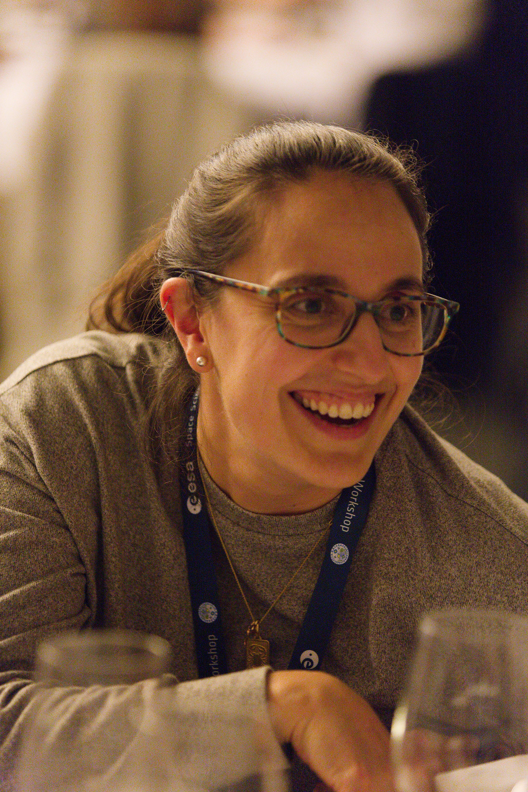

Elena Favaro
Planetary Scientist
Planetary surface processes · Remote sensing · ExoMars Rosalind Franklin Rover Mission · 3D image analysis and digital elevation model creation
European Space Agency
Cursor
About
I am a Research Fellow at the European Space Agency. My research interests lie at the intersection of geology, geomorphology, and atmospheric sciences. At its core, I seek to answer questions relating to the dynamic interplay of processes and mechanisms responsible for the surficial expression of arid environments on Earth and Mars. I use the expresion of landforms (like yardangs and periodic bedrock ridges) and bedforms (like megaripples, dunes, transverse aeolian ridges, dust devils, and wind streaks) in remote areas of Earth and Mars to piece together the complex climatic history that has shaped the landscape, either contemporaneously or at some point in the past.
Selected Publications
Section under construction
-
2024Earth and Planetary Science Letters, 626, 118522. · 2025From the Abstract: Periodic Bedrock Ridges (PBRs) are repeating, symmetrical, wind-transverse, bedrock-abraded linear ridges that occur on Mars as parallel sets. Here, we extend our previous survey of PBRs at Oxia Planum – the landing site of ESA's ExoMars Rosalind Franklin rover – to include three additional sites along the margins of the circum-Chryse basin to understand patterns in PBR orientation and occurrence. We analyzed PBR crestline orientation at each study site and found them to be consistent across this large region, but their orientations do not align with global circulation model winds, suggesting contemporary winds are not responsible for PBR development. Furthermore, we used observations of landscape-level stratigraphic relationships at Oxia Planum to constrain the formation age of PBRs to be late Noachian to early Amazonian. Their consistent orientations and age suggest that the Chryse-margin PBRs formed concurrently and represent modification of an ancient palaeosurface. In addition, we find a tendency for PBRs to preferentially occur in regions where Fe/Mg-rich phyllosilicate minerals were detected in hyperspectral remote sensing data. We conclude that regional scale aeolian processes formed the circum-Chryse PBRs, and that exposed bedrock with Fe/Mg-rich phyllosilicate detections were either more susceptible to PBR formation, or better preserve PBRs than other regional lithologies. https://doi.org/10.1016/j.epsl.2023.118522
-
2021Earth Surface Processes and Landforms · 2021Summary to come. DOI: 10.1002/esp.5212
-
2021Journal of Geophysical Research: Planets · 2021Summary to come. DOI: 10.1029/2020JE006723
-
2020Icarus · 2020Summary to come. DOI: 10.1016/j.icarus.2020.113765
Brief CV
-
2024 – PresentEuropean Space Agency Research Fellow / Noordwijk, Netherlands.
-
2020 – 2023Postdoctoral Research Associate The Open University Planetary Environments Group / Milton Keynes, UK.
-
2014 – 2020Doctor of Philosophy (Geography) University of Calgary / Calgary, Alberta.